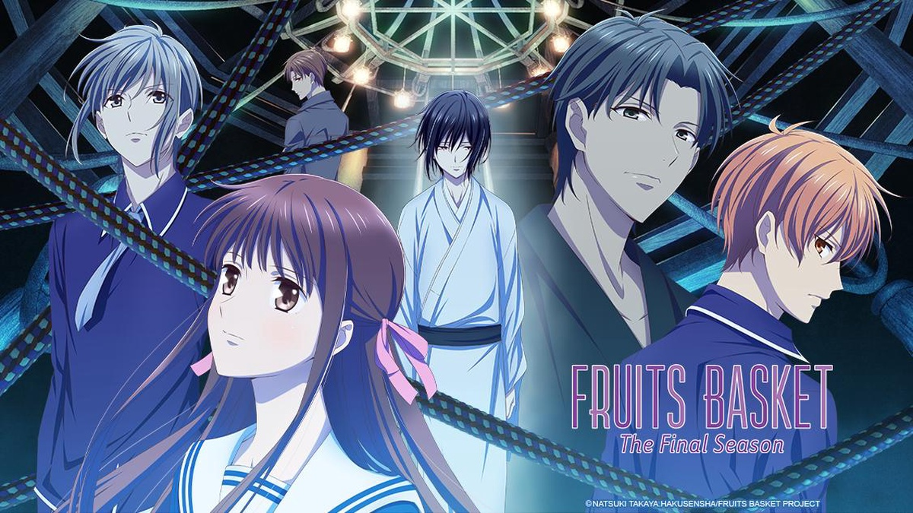
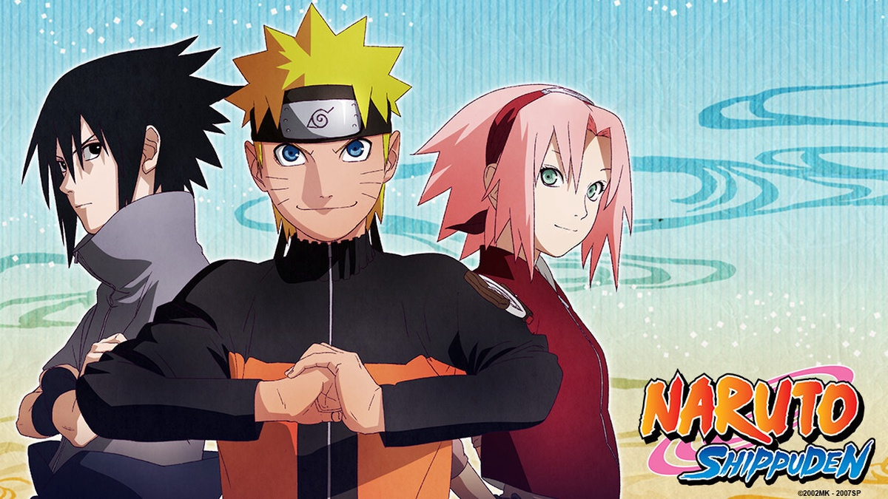

JUJUTSU KAISEN
Yuji Itadori is a boy with tremendous physical strength, though he lives a completely ordinary high school life. One day, to save a classmate who has been attacked by curses, he eats the finger of Ryomen Sukuna, taking the curse into his own soul. From then on, he shares one body with Ryomen Sukuna. Guided by the most powerful of sorcerers, Satoru Gojo, Itadori is admitted to Tokyo Jujutsu High School, an organization that fights the curses... and thus begins the heroic tale of a boy who became a curse to exorcise a curse, a life from which he could never turn back.

One Piece
Monkey. D. Luffy refuses to let anyone or anything stand in the way of his quest to become the king of all pirates. With a course charted for the treacherous waters of the Grand Line and beyond, this is one captain who'll never give up until he's claimed the greatest treasure on Earth: the Legendary One Piece!

Attack on Titan
Known in Japan as Shingeki no Kyojin, many years ago, the last remnants of humanity were forced to retreat behind the towering walls of a fortified city to escape the massive, man-eating Titans that roamed the land outside their fortress. Only the heroic members of the Scouting Legion dared to stray beyond the safety of the walls – but even those brave warriors seldom returned alive. Those within the city clung to the illusion of a peaceful existence until the day that dream was shattered, and their slim chance at survival was reduced to one horrifying choice: kill – or be devoured!

SPY x FAMILY
World peace is at stake and secret agent Twilight must undergo his most difficult mission yet—pretend to be a family man. Posing as a loving husband and father, he’ll infiltrate an elite school to get close to a high-profile politician. He has the perfect cover, except his wife’s a deadly assassin and neither knows each other’s identity. But someone does, his adopted daughter who’s a telepath!

Fruits Basket
Tohru Honda thought her life was headed for misfortune when a family tragedy left her living in a tent. When her small home is discovered by the mysterious Soma clan, she suddenly finds herself living with Yuki, Kyo, and Shigure Soma. But she quickly learns their family has a bizarre secret of their own: when hugged by the opposite sex, they turn into the animals of the Zodiac!

Naruto Shippuden
Naruto Uzumaki wants to be the best ninja in the land. He's done well so far, but with the looming danger posed by the mysterious Akatsuki organization, Naruto knows he must train harder than ever and leaves his village for intense exercises that will push him to his limits.

TONIKAWA: Over The Moon For You
Nasa Yuzaki falls in love at first sight after an encounter with the mysterious Tsukasa. When Nasa earnestly confesses his feelings, she replies, "I'll date you, but only if we're married." Nasa and Tsukasa's cute and precious newlywed life of love is about to begin!
Horimiya
When the popular Hori and the gloomy Miyamura meet, they reveal another side of themselves. Could this be the start of something new?

My Hero Academia
Izuku has dreamt of being a hero all his life—a lofty goal for anyone, but especially challenging for a kid with no superpowers. That’s right, in a world where eighty percent of the population has some kind of super-powered “quirk,” Izuku was unlucky enough to be born completely normal. But that’s not enough to stop him from enrolling in one of the world’s most prestigious hero academies.

Black Clover
In a world where magic is everything, Asta and Yuno are both found abandoned at a church on the same day. While Yuno is gifted with exceptional magical powers, Asta is the only one in this world without any. At the age of fifteen, both receive grimoires, magic books that amplify their holder’s magic. Asta’s is a rare Grimoire of Anti-Magic that negates and repels his opponent’s spells. Being opposite but good rivals, Yuno and Asta are ready for the hardest of challenges to achieve their common dream: to be the Wizard King. Giving up is never an option!

.jpeg)